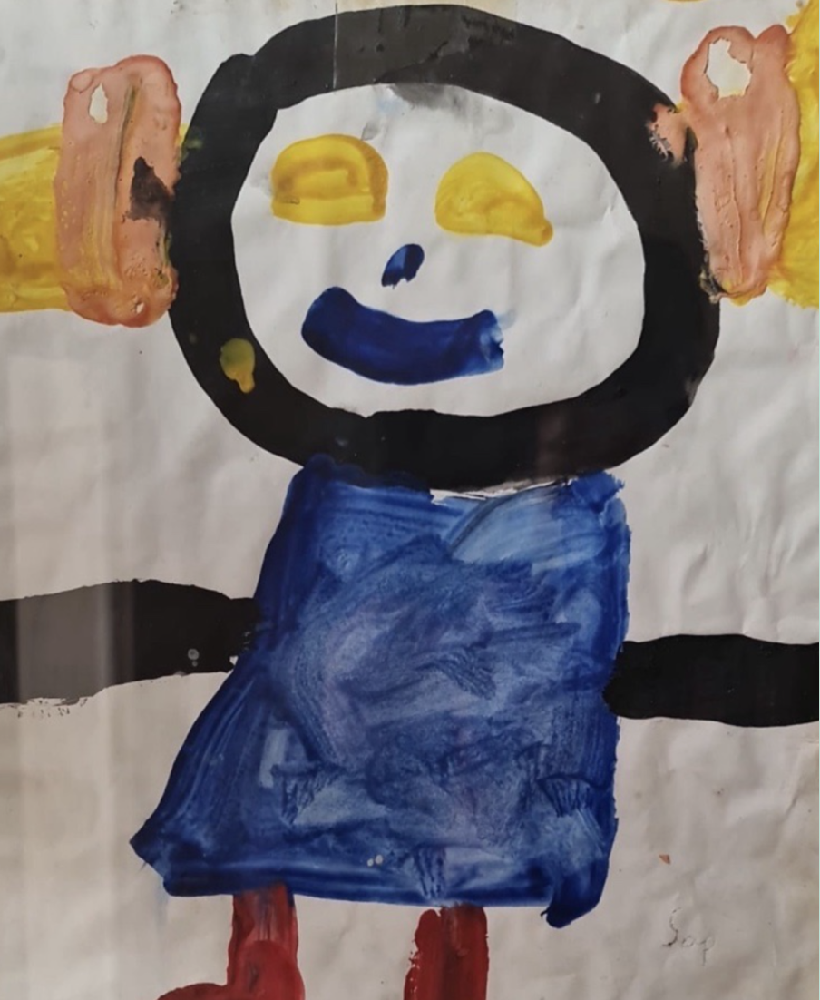
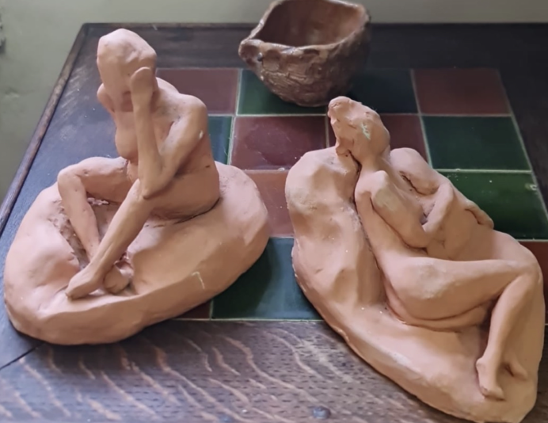
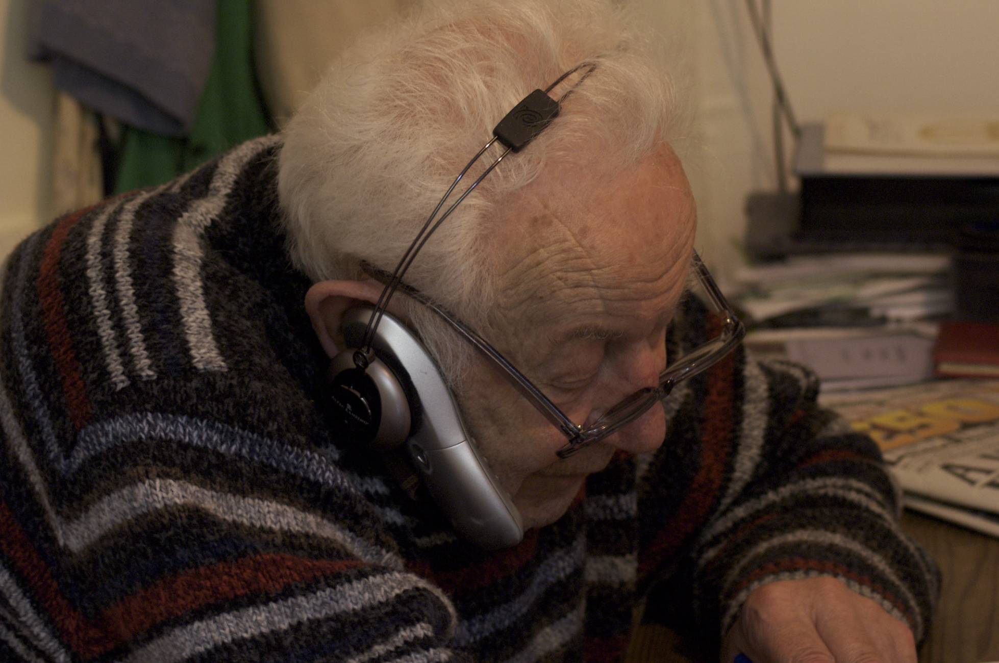
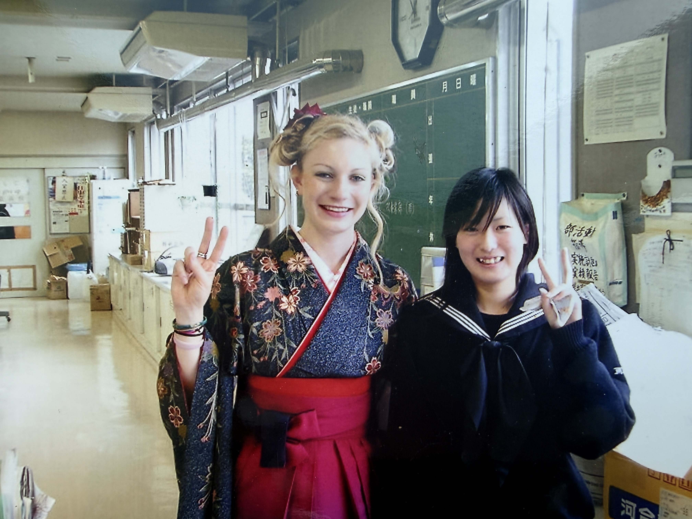
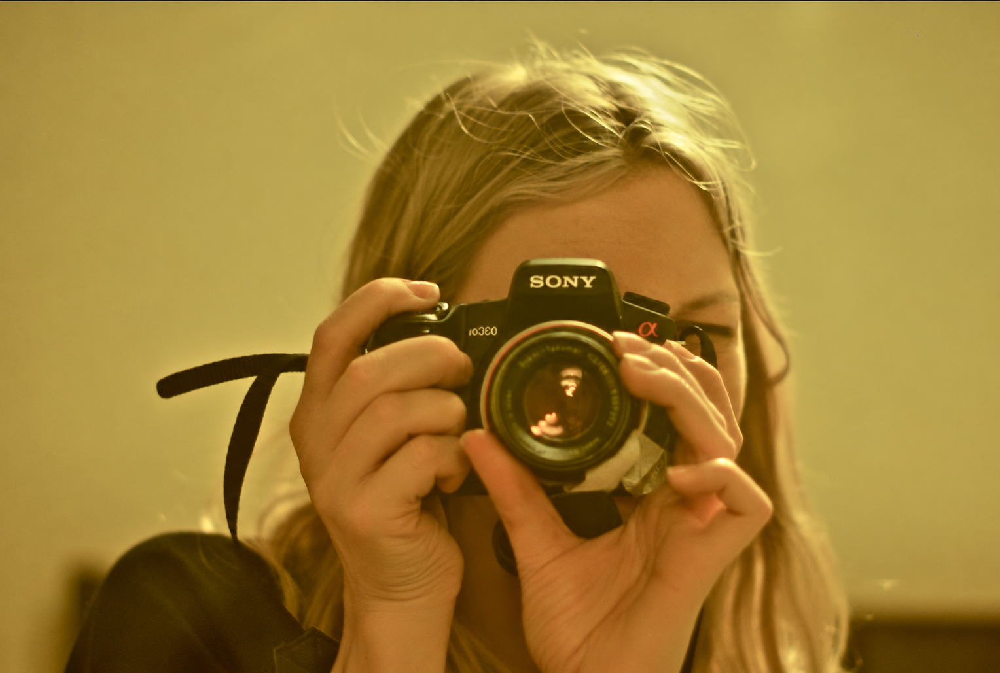
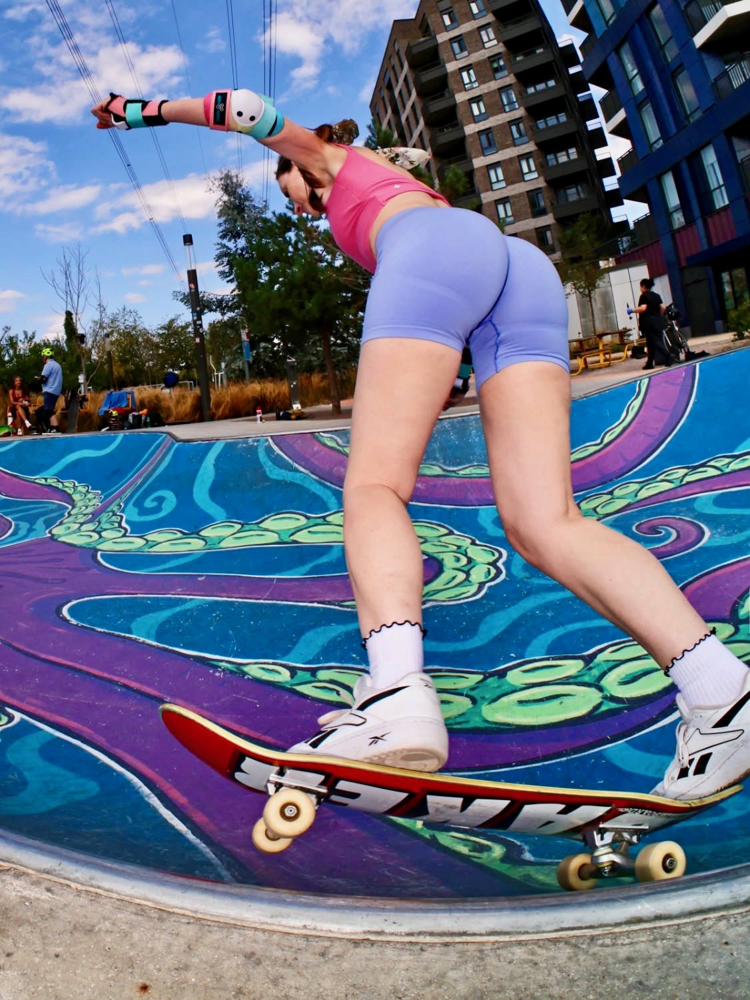
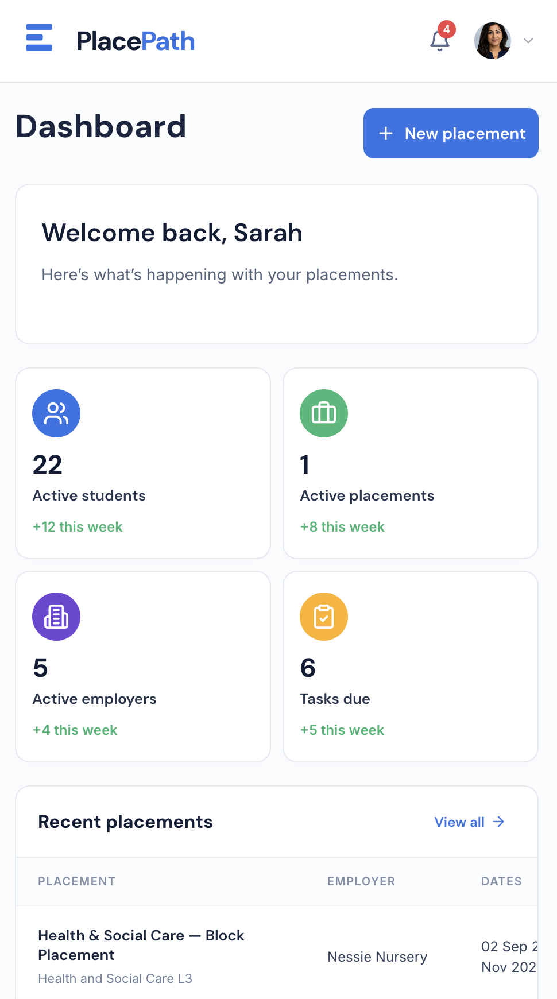

I've always wanted to make things.
Long before I became a product designer, I was curious about how things looked, worked and felt. These are the moments, people and interests that shaped how I design.
Follow the path
Before getting it right came the joy of trying.
As a child I drew, painted, sculpted and made things without worrying whether they were any good. I was interested in what an idea might become when I tried to bring it into the world.

Some ideas need to be held.
Making things physically taught me to experiment, see objects from different angles, and accept that the first attempt isn't always the final answer. That instinct is still part of how I design.

Good design has to work for people.
My dad always inspired me with his practical, engineering-led thinking. A photograph of him with a telephone captures something I love about that approach: seeing everyday needs and finding ways to make things work better. For me, accessibility starts with paying attention to people.
“Thoughtful design begins with paying attention.”

Learning to see the world differently.
Working as a professional English teacher for the Japanese government gave me the opportunity to immerse myself in another culture and connect with people whose experiences differed from my own. It broadened my perspective, challenged my assumptions and reinforced the importance of listening, adapting and understanding people in context — lessons that continue to shape how I approach product design.

Learning to look closer.
Photography gave me another way to explore the world: noticing details, choosing a perspective and finding the story in a moment. That curiosity and attention to context matter just as much in product design.

I still like being a beginner.
Skating, exploring outdoors, growing things and making things from scratch take me back to the same feeling: curiosity without guaranteed success. There's real value in trying, adjusting and trying again.

Creativity meets considered thinking.
Product design brings together what I love: making, observing, untangling complexity and creating something genuinely useful. I want the experiences I design to feel thoughtful, intuitive and human.
Still curious.
Still making.
That instinct to make things has never gone away. Now I put it to work designing products that make people's lives a little easier.
Explore my work ↗